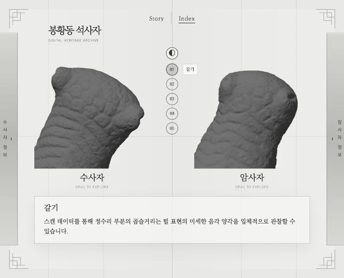

두 개체와 표면색
수사자와 암사자를 나란히 배치하고 각 개체를 독립적으로 회전·확대하게 해 주세요. 가운데 표면 전환 버튼으로 원본 컬러와 표면색을 끈 회색 보기를 바꿔 형상과 표면색을 비교하게 해 주세요.Index · 04
두 석사자를 직접 돌려 보고, 같은 부위의 차이를 나란히 살펴보는 웹 화면입니다.
Index 직접 보기
마우스나 손가락으로 각각의 석사자를 돌리고 확대할 수 있습니다.
표면색을 켜면 돌의 색과 흔적이, 회색 보기에서는 조각의 굴곡이 잘 드러납니다.

가운데 번호를 선택하면 두 석사자가 같은 부위를 보여 줍니다. 형태를 비교하면서 각 개체의 정보도 함께 살펴볼 수 있습니다.
완성된 화면과 동작을 바탕으로 재구성한 지시문입니다. 실제 입력 원문과는 구분해 정리했습니다.
수사자와 암사자를 나란히 배치하고 각 개체를 독립적으로 회전·확대하게 해 주세요. 가운데 표면 전환 버튼으로 원본 컬러와 표면색을 끈 회색 보기를 바꿔 형상과 표면색을 비교하게 해 주세요.중앙의 01–05 번호를 갈기·수염·무늬·이목구비·눈매에 연결해 주세요. 번호를 누르면 두 개체가 같은 관찰 부위를 보여 주고, 양옆의 정보 패널에서 각 개체의 수치와 설명을 확인하게 해 주세요.